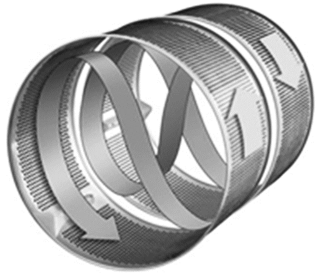
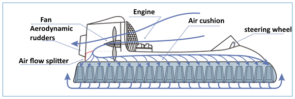

Chương 3 40 Thủ thuật
3.1 Nguyên tắc phân nhỏ
3.1.1 Định nghĩa
Nguyên tắc này quy định việc phân chia một đối tượng thành một phần với khả năng phân đoạn thành các phân tử hoặc thành một trường.
Định nghĩa truyền thống:
Chia nhỏ
Làm cho một đối tượng dễ dàng tháo rời;
Tăng mức độ phân khúc của một đối tượng.
Mức độ phân khúc có thể thay đổi trong một phạm vi khá rộng. Có thể quan sát thấy một chuỗi các biến đổi: một khối lượng bán ra, chia thành hai phần, chia thành nhiều phần, phân đoạn thành các hạt, bột, bột nhão và gel, nhũ tương và hỗn hợp lơ lửng, chất lỏng, bọt, phun và sol khí, khí, plasma, trường , và cuối cùng, trở thành trống rỗng, chân không.
Các quy trình và hoạt động, không gian và khoảng trống, bề mặt và dòng chảy có thể được phân đoạn. Giả sử rằng một vật đang chuyển động là một dòng chất lỏng. Đó là trường hợp, dòng chảy có thể được chia thành hai, sau đó thành nhiều dòng, tiếp tục thành các tia phản lực mỏng, và cuối cùng, được phân đoạn thành một chất lỏng phân tán trong không khí: một sol khí.
Nguyên tắc Phân đoạn thường được áp dụng để có được các nguồn lực cho việc chuyển đổi hệ thống, tách các bộ phận và mang các chức năng mới khỏi các thành phần của hệ thống. Nói chung, nguyên tắc phân đoạn có thể áp dụng được nếu một phần của hệ thống hoặc thành phần của nó phải chịu một tác động bất lợi nào đó: nó có thể được tách ra khỏi toàn bộ thành phần và có thể thay thế được. Các bộ phận này hoặc các thành phần tự biến đổi thường có thể thay đổi phương thức hoạt động và chuyển sang cấp độ phân tử, nguyên tử và trường. Điều quan trọng là việc áp dụng Nguyên tắc Phân đoạn tạo cơ hội để phát triển hệ thống hơn nữa: chỗ ở của các thuộc tính của các bộ phận được phân chia, năng động hóa hoạt động của hệ thống và tăng khả năng kiểm soát.
3.1.2 VÍ DỤ
Ví dụ. Nguyên tắc phân đoạn trong thiết kế máy giặt

Trống máy giặt Contrarotator của Dyson Appliances được chia thành hai phần. Chúng có thể quay với các tốc độ khác nhau, cùng chiều và hướng về nhau. Điều này cho phép chọn chế độ giặt và vắt cần thiết. Nếu các bộ phận của lồng giặt quay về phía nhau luân phiên đảo ngược chiều quay, máy sẽ không xoay vải mà xoay nó bắt chước chế độ giặt tay. Kết quả là quần áo được giặt sạch hơn và nhanh hơn rất nhiều.
Ví dụ. Nguyên tắc phân đoạn trong chuyển phát thông điệp
Tại các thành phố của Hàn Quốc, bạn có thể tìm thấy các đèn hiệu có thông tin về hành động của kẻ thù. Phân đoạn được áp dụng như sau trong trường hợp này. Lãnh thổ của đất nước được chia thành nhiều phần để ngọn lửa được thắp sáng trên một ngọn hải đăng có thể nhìn thấy rõ ràng trên ngọn hải đăng tiếp theo. Điều này cho phép chúng tôi cung cấp thông tin nhanh chóng đến thủ đô. Hệ thống truyền tín hiệu này được triển khai hiện đại là một mạng di động phủ khắp lãnh thổ của một quốc gia.
Ví dụ. Máy tính như một bộ tay cầm

Máy tính gia nhập thị trường với tư cách là một thiết bị đơn lẻ lại được chia thành nhiều bộ phận. Màn hình, bộ phận hệ thống và bộ điều khiển là giai đoạn đầu tiên trong quá trình phân đoạn thiết kế máy tính. Các nhà phát minh Nhật Bản đã tiến thêm một bước nữa. Bằng cách sử dụng công nghệ Bluetooth, họ đã trình bày một máy tính là một tập hợp các vật phẩm giống như tay cầm. Sử dụng các tay cầm này, người dùng có thể lắp ráp một máy tính chức năng. Bàn phím và hình ảnh được chiếu lên bất kỳ bề mặt phẳng nào. Điều này làm cho máy tính đặc biệt nhỏ gọn trong khi vẫn bảo toàn tất cả các chức năng cơ bản của nó.
Ví dụ. Quadcopter
Quadcopter là một bước tiến trong việc phát triển khái niệm về thiết bị nâng thẳng đứng. Quadcopter khác với người tiền nhiệm của nó, trực thăng, ở chỗ có thể hình dung động cơ đẩy của quadcopter là kết quả của việc chia một cánh quạt máy bay trực thăng lớn thành bốn cánh quạt có đường kính nhỏ hơn. Điều này giúp đơn giản hóa thiết kế máy bay một cách đáng kể và cung cấp khả năng điều khiển chuyến bay dễ dàng.
Ví dụ. Chảo được chia thành các phần
Bạn có thể nấu một món ăn trên chảo rán thông thường. Chảo Avon cho phép nấu hai món ăn khác nhau cùng một lúc. Điều này đạt được bằng cách chia nó với các phân vùng thành hai phần độc lập.
Ví dụ. Thủy phi cơ

Nhiều địa hình tồn tại như đầm lầy, mặt nước, băng mỏng hoặc vỡ, nơi bánh xe thông thường không thể chạy. Có một bánh xe được “phân đoạn” thành các phân tử chạy tốt. Một luồng phân tử không khí được tăng tốc bởi những chiếc quạt mạnh được sử dụng làm động cơ và hỗ trợ của thủy phi cơ.
3.2 Nguyên tắc tách
Kỹ thuật này là một biến thể của Nguyên tắc Phân đoạn và quy định việc tách một bộ phận ra khỏi đối tượng để đặt nó trong những điều kiện thuận lợi nhất cho hoạt động của toàn bộ hệ thống.
3.2.1 Định nghĩa truyền thống
Loại bỏ một phần gây nhiễu (thuộc tính) khỏi đối tượng hoặc ngược lại, tách phần cần thiết duy nhất (thuộc tính).
Việc áp dụng nguyên tắc này phần lớn phụ thuộc vào hoàn cảnh hiện tại và cần thiết. Sẽ xảy ra rằng chúng ta phải làm điều gì đó nhưng không thể hoặc không thể áp dụng toàn bộ hệ thống cho mục đích đó. Nó tốn kém và phức tạp hoặc ứng dụng hệ thống bị hạn chế bởi các yếu tố có hại dẫn đến hoặc hệ thống không thể thực hiện các hành động cần thiết về mặt kỹ thuật. Trong trường hợp này, cần phải tách bộ phận cần thiết của nó ra khỏi hệ thống để thực hiện hành động cần thiết và xem xét khả năng hoạt động của nó riêng biệt với hệ thống. Trong các tình huống, hệ thống cung cấp năng lượng cho phần được tách ra và hoạt động như một thiết bị điều khiển.
Tình huống có thể xảy ra khi một bộ phận của hệ thống tạo ra hiện tượng có hại, can thiệp vào hoạt động của toàn bộ hệ thống. Điều này có thể bao gồm các hiện tượng xảy ra trong quá trình vận hành hệ thống: tiếng ồn, quá tải nhiệt của các bộ phận, tiếp xúc với hóa chất độc hại, … Một bộ phận của hệ thống có thể gây ra hư hỏng do tồn tại trong cấu trúc hệ thống: chiếm chỗ, không thuận tiện trong bảo trì và sửa chữa, ảnh hưởng xấu đến các bộ phận khác của hệ thống,… Trong trường hợp này, nên di dời bộ phận bị rối loạn chức năng của hệ thống đến nơi mà tác hại nó sinh ra sẽ không ảnh hưởng đến tình trạng và hoạt động của toàn bộ hệ thống.
Khi áp dụng Nguyên tắc Tách biệt, có thể xem xét không chỉ các thành phần của hệ thống mà còn cả các hoạt động và quá trình được thực hiện. Điều gì cần xem xét tùy thuộc vào từng trường hợp cụ thể phát sinh khi giải quyết vấn đề.
Nguyên tắc Tách biệt được áp dụng để tạo ra một cấu trúc hợp lý mới của hệ thống phù hợp hơn với hoạt động của nó. Khi áp dụng nguyên tắc, cần phải cân bằng triệt để hệ thống, các thuộc tính của nó, tính năng động và khả năng điều khiển ngay từ đầu.
3.2.2 VÍ DỤ
Ví dụ. Máy tính có màn hình có thể tháo rời
Màn hình là một bộ phận thiết yếu, một thành phần hoạt động của máy tính. Tách thành phần hoạt động của nó, các nhà phát triển cho phép người dùng sử dụng nó một cách thuận tiện. Bạn có thể treo một màn hình có thể tháo rời lên tường để thuyết trình. Nếu nó được trang bị bộ nhớ tối thiểu và bộ xử lý đơn giản, bạn có thể mang theo khi đi du lịch.
Ví dụ. Máy lạnh mặt đất
Nếu nhiệt độ không khí cao, tại sân bay xảy ra sự cố làm mát khoang máy bay. Nếu bạn sử dụng bộ phận điều hòa không khí của máy bay, bạn sẽ bị cháy rất ít tác dụng vì bộ phận này chỉ hoạt động khi động cơ đang hoạt động. Để làm mát máy bay trên mặt đất kịp thời và hiệu quả, thiết bị này sẽ được gỡ bỏ khỏi hệ thống, tức là sử dụng thiết bị điều hòa không khí mặt đất trên phương tiện hoặc phương tiện tĩnh.
Ví dụ. UAV trinh sát
Khi điều khiển xe trên đường đông đúc hoặc trong các điều kiện lái xe phức tạp khác, điều quan trọng là phải biết tình hình giao thông phía trước. Để giải quyết vấn đề này, một robot bay, một quadcopter, đã được sử dụng. Robot được phóng lên không trung và di chuyển phía trước xe, truyền tình hình giao thông đến màn hình hiển thị của người lái.
Ví dụ. Ăng ten parafoil kéo
Hoạt động của ăng-ten trên tàu phụ thuộc rất nhiều vào độ cao của nó. Do đó, hệ thống TALONS dường như được quan tâm, nó cung cấp khả năng đưa ăng ten lên cao hơn nhiều trong khi sử dụng một cánh được làm dưới dạng parafoil. Áp dụng một ý tưởng như vậy có thể tăng phạm vi của các hệ thống thông tin liên lạc vì không có con tàu nào được trang bị cột buồm ở độ cao này.
Ví dụ. Nhà máy đồng phát
Các nhà máy cung cấp nhiệt và điện cho khu vực đô thị (nhà máy đồng phát) đốt than, nhiên liệu dầu, khí đốt và các nhiên liệu hóa thạch khác. Điều này dẫn đến khí thải gây ô nhiễm: khói, các hạt khói và carbon monoxide. Do đó, các nhà máy đồng phát được đưa đi và đặt ở một khoảng cách an toàn với các công trình dân cư.
3.3 Nguyên tắc chất lượng cục bộ
Nguyên tắc Chất lượng cục bộ cũng dựa trên Nguyên tắc Phân đoạn và quy định việc tách một thành phần hoặc một hệ thống thành các vùng chức năng, mỗi vùng có các đặc tính khác nhau phù hợp nhất cho hoạt động của hệ thống.
3.3.1 Định nghĩa truyền thống của nguyên tắc:
Thay đổi cấu trúc đối tượng (hoặc môi trường bên ngoài, ảnh hưởng bên ngoài) thành không đồng nhất. Các bộ phận khác nhau của đối tượng nên có (thực hiện) các chức năng khác nhau. Mỗi bộ phận của đối tượng cần được đặt trong những điều kiện thích hợp nhất cho hoạt động của nó. Thông thường, chúng ta thấy rằng hoặc các yêu cầu xung đột được áp đặt trên cùng một thành phần hệ thống hoặc hệ thống phải thực hiện các chức năng khác nhau. Trong trường hợp này, nên chia thành phần thành các phần, mỗi phần phải được cung cấp các thuộc tính cần thiết để đáp ứng các yêu cầu khác nhau và để thực hiện các chức năng cần thiết.
Cụ thể, thuyền không chỉ không thấm nước mà còn phải chắc chắn để giữ được hình dáng thuyền. Nó có nghĩa là các mặt phải chống thấm nước và đủ chắc chắn. Để đáp ứng các yêu cầu xung đột như vậy đối với một thành phần, cần phải thỏa hiệp về các thuộc tính hữu ích của nó. Những chiếc thuyền đầu tiên được khoét trực tiếp từ các thân cây, chúng nặng và di chuyển chậm.
Tình hình có thể được cải thiện đáng kể bằng cách chia thành phần thành các phần có các thuộc tính khác nhau. Điều này cho phép đáp ứng tốt hơn các yêu cầu của từng bộ phận của hệ thống do các điều kiện hoạt động của nó. Cụ thể, thiết kế truyền thống của thân tàu hoặc thuyền sử dụng khung chịu lực: khung, khung dọc, ke, … Khung này cung cấp cho thân tàu một độ bền cần thiết. Để tránh rò rỉ, lớp mạ của vật liệu chống thấm mỏng được gắn vào khung. Điều này đảm bảo chất lượng địa phương: khung có độ bền cao và lớp mạ ngăn rò rỉ.
Nguyên tắc chất lượng cục bộ có thể được sử dụng cho các thành phần của hệ thống cũng như cho các hoạt động của quy trình kỹ thuật. Khi phân tích các thành phần, chúng ta nên tập trung vào phân tích và chuyển đổi các thuộc tính của chúng, và khi làm việc với các quy trình, về hiệu suất của chúng.
3.3.2 VÍ DỤ
Ví dụ. Cứng răng bánh răng
Các yêu cầu mâu thuẫn được đặt ra đối với kết cấu bánh răng. Bản thân bánh răng phải mềm dẻo để tránh nứt vỡ và làm cho nó chạy nhẹ nhàng và mượt mà hơn. Đối với răng bánh răng, chúng phải có bề mặt cứng, chống mài mòn tốt. Để đạt được mục đích đó, nhiều phương pháp khác nhau được sử dụng: cacbon hóa, làm cứng bề mặt răng, làm cứng bề ngoài bánh răng bằng cách sử dụng dòng điện tần số cao, v.v.
Ví dụ. Chiếu sáng đường băng
Khi hạ cánh vào ban đêm, phi công cần nhìn rõ đường băng sân bay. Giải pháp rõ ràng là chiếu sáng đường băng bằng đèn chiếu sáng hoặc đèn pha mạnh. Tuy nhiên, việc chiếu sáng này khá tốn kém nên đường băng chỉ được chiếu sáng ở một số nơi. Để chỉ ra giới hạn và hướng của đường băng, đèn pin và chuỗi đèn đứt nét được sử dụng và điều này dường như là đủ.
Ví dụ. Xe van đa năng
Thùng tủ lạnh tồn tại để vận chuyển hàng hóa dễ hư hỏng trong thời tiết nắng nóng. Đồng thời, một phần của hàng hóa yêu cầu nhiệt độ trên 0, ngay cả trong mùa đông. Để vận chuyển đồng thời hàng hóa cần làm mát và hàng hóa cần sưởi ấm trong một xe, xe van được chia thành hai phần với các đặc tính khác nhau. Một phần của van được làm mát, và phần khác được làm nóng. Để đơn giản thay đổi chế độ nhiệt độ, bộ làm mát nhiệt điện có thể làm nóng hoặc làm mát với phân cực điện áp thay đổi được sử dụng.
3.4 Nguyên tắc thay đổi đối xứng
Nguyên tắc Thay đổi Đối xứng quy định sự thay đổi về hình dạng thành phần hoặc cấu trúc và bố cục hệ thống.
3.4.1 Định nghĩa truyền thống của nguyên tắc:
Thay đổi hình dạng của một đối tượng từ đối xứng sang không đối xứng; Nếu một vật thể không đối xứng, hãy tăng mức độ bất đối xứng của nó. Hình dạng đối xứng của các đối tượng là phổ biến nhất, trực giác của con người cố gắng làm cho một đối tượng giống nhau về hai hoặc nhiều mặt. Trong trường hợp này, quán tính tâm lý và tính toán đơn giản hoạt động: khi làm việc một mặt của thành phần, người ta không cần phải suy nghĩ về các tham số của mặt thứ hai và cho rằng chúng giống nhau. Tuy nhiên, cách tiếp cận này ngay lập tức ngừng hoạt động khi chúng ta thấy có sự phân biệt rõ ràng trong các yêu cầu đối với từng mặt của hệ thống hoặc thành phần của nó. Ví dụ, con thuyền đối xứng trong mặt phẳng dọc và dọc, mặt trái là sự phản chiếu đều đặn của mặt phải. Cách tiếp cận này hoạt động tốt nếu thành phần hoặc hệ thống được cách ly và không có yêu cầu bổ sung nào được áp đặt lên các thành phần và siêu hệ thống khác. Điều này không phải lúc nào cũng đúng như vậy, các yêu cầu mâu thuẫn khó thỏa mãn luôn được áp đặt cho dạng thành phần. Tình huống đơn giản hóa đáng kể nếu thành phần được làm không đối xứng, tức là các yêu cầu khác nhau đối với các phần bên phải và bên trái của thành phần được xem xét. Điều này mang lại khả năng điều chỉnh tốt hơn hình thức đối tượng phù hợp với các điều kiện hoạt động của nó.
Nguyên tắc Thay đổi Đối xứng có hiệu lực cho cả các thành phần của hệ thống và cho các hành động được thực hiện trong quá trình làm việc của nó. Nó thể hiện cách điều chỉnh tốt hơn hình thức và các thông số khác của thành phần hệ thống với các thành phần khác và điều kiện hoạt động của chúng. Thường thì hình thức không đối xứng và làm cho quá trình diễn ra không đều cho phép tạo ra các dao động giả không phù hợp và các hiệu ứng bất lợi khác.
3.4.2 VÍ DỤ
Ví dụ. Cánh quạt
Hình dạng cánh quạt của những chiếc quạt gia dụng đầu tiên đối xứng về trục cánh quạt, điều này khiến chúng ồn ào và kém hiệu quả. Thực tế là các yêu cầu khác nhau được đặt ra đối với các cạnh trước và sau của các lưỡi dao. Trong quá trình phát triển của công nghệ, hình dạng lưỡi kiếm đã trở nên không đối xứng, giống như cánh của con dơi. Các cạnh trước và sau của lưỡi dao cũng được làm khác nhau. Mép trước trơn nhẵn, mép sau có các răng siêu nhỏ giúp phá vỡ luồng không khí và giảm tiếng ồn.
Ví dụ. Máy bay trinh sát
Thiết kế máy bay trinh sát cần đảm bảo rằng người quan sát có tầm nhìn cao nhưng các yếu tố cấu trúc gây trở ngại cho nó. Do đó, các nhà thiết kế của Blohm & Voss quyết định làm cho chiếc máy bay không đối xứng. Máy bay BV 141 có cabin quan sát viên dịch chuyển sang bên phải so với thân máy bay và phần phụ được dỡ bỏ bên phải. Vị trí cabin này mang lại tầm nhìn tốt.
Ví dụ. Mã hóa bất đối xứng
Mã hóa một tài liệu là một bước quan trọng trong giao tiếp thông tin bí mật. Mã hóa đối xứng thường được sử dụng cung cấp rằng người nhận có cùng một khóa để giải mã như khóa mà người gửi tài liệu được mã hóa có. Điều này làm giảm tính bảo mật của thông tin liên lạc dữ liệu. Trong trường hợp mã hóa không đối xứng, hai khóa khác nhau được sử dụng: một để mã hóa (còn được gọi là “khóa công khai”) và khóa còn lại để giải mã (được gọi là “khóa riêng”). Điều này làm tăng đáng kể độ tin cậy của giao tiếp dữ liệu.
Ví dụ. Tàu sân bay
Sàn tàu sân bay cần được điều chỉnh phù hợp với cả điều kiện cho máy bay cất và hạ cánh. Quá trình cất cánh đòi hỏi một đường băng dài, trên đó có lắp đặt tên lửa đẩy hoặc máy phóng cất cánh. Máy bay có thể hạ cánh trên một đường băng ngắn được trang bị hệ thống chống sét. Tình hình phức tạp bởi yêu cầu máy bay cất và hạ cánh cùng một lúc. Mâu thuẫn này được giải quyết bằng cách làm cho sàn đáp không đối xứng: đường băng cất cánh nằm dọc theo trục tàu, còn đường băng hạ cánh nằm nghiêng một góc.
Ví dụ. Đai ốc không đối xứng
Điểm gắn thanh ray và tà vẹt phải chịu lực rung và va đập cực mạnh, do đó các đai ốc giữ có thể bị lỏng ra. Để giải quyết hiện tượng này, người ta đã thiết kế một giá đỡ bu lông có đai ốc tự bảo vệ. Đai ốc bên trong có hình nón trên đỉnh được lắp đặt không đối xứng với trục quay bị lệch. Đai ốc bên ngoài có một vết cắt hình nón nằm ở trục quay của đai ốc. Khi đai ốc trên được vặn vào, hình nón không đối xứng sẽ dịch chuyển nó sang một bên, một cụm tự bảo vệ được hình thành.
3.5 Nguyên tắc hợp nhất
Nguyên tắc Hợp nhất có nghĩa là mâu thuẫn có thể được giải quyết bằng cách hợp nhất một số thành phần của hệ thống hoặc các hoạt động mà nó thực hiện.
3.5.1 Định nghĩa truyền thống của nguyên tắc:
Hợp nhất các đối tượng giống hệt nhau hoặc các đối tượng dành cho các hoạt động liền kề. Thực hiện song song các hoạt động giống hệt nhau hoặc liền kề. Trong một thiết kế hệ thống, quán tính tâm lý đang hoạt động, nó gợi ý rằng: mỗi chức năng được thực hiện nên có người thực hiện riêng. Điều này dẫn đến sự phức tạp của hệ thống, thành phần và cấu trúc của nó có thể và cần được đơn giản hóa. Điều này có thể được thực hiện bằng cách xem xét khả năng hợp nhất của một số thành phần. Kết quả là một thành phần đa năng có thể thực hiện một số chức năng.
Một hiệu ứng mới về chất lượng thường được yêu cầu nhưng điều này không thể thực hiện được khi sử dụng một thành phần duy nhất, sau đó một thành phần khác được thêm vào nó. Một hệ thống tích hợp như vậy được gọi là bisystem. Ngoài việc tăng năng suất, một hệ thống kép có thể có các thuộc tính hoàn toàn mới khác với các thuộc tính của một hệ thống thông thường, thường cho phép thực hiện các hành động trước đây không có sẵn. Hợp nhất được hiểu trong trường hợp này không chỉ và không nhiều như sự hợp nhất cơ học của hai hệ thống. Nó đúng hơn là một tổ chức sử dụng chung để thực hiện chức năng cần thiết.
Cách tiếp cận tương tự có thể được áp dụng cho các hoạt động làm việc. Trong trường hợp này, chúng được kết hợp với nhau theo thời gian, tức là một số hoạt động được thực hiện song song cùng một lúc. Điều này cho phép cải thiện đáng kể hiệu suất hệ thống và giảm thời gian giao sản phẩm. Một ví dụ cụ thể của hoạt động hợp nhất là việc hợp nhất liên tiếp một số hệ thống (hoạt động làm việc) để tăng tầm quan trọng của một tham số hoạt động quan trọng. Điều này xảy ra bởi vì năng lượng hoặc tích lũy trong các hoạt động trước đó hoặc hiện diện trong hệ thống ở dạng tích lũy được sử dụng ở mỗi giai đoạn của quá trình. Hành động nhiều giai đoạn có một số ưu điểm so với hành động một giai đoạn vì nó cho phép giảm đáng kể mức tiêu thụ năng lượng để hoàn thành quy trình.
Hợp nhất một số hệ thống cho phép tạo ra hiệu ứng hệ thống, các thuộc tính tích cực bổ sung không có trong mỗi hệ thống được hợp nhất. Tương tự, hợp nhất các hệ thống có thể giúp tránh các tác động bất lợi.
Nguyên tắc Hợp nhất hoạt động tốt khi kết hợp với Nguyên tắc Phân đoạn. Vì vậy, để xây dựng công trình, ban đầu vật liệu được nghiền thành bột, trộn thêm xi măng, vật liệu đó hòa quyện lại thành chất lượng mới được. Ở cấp độ vi mô, bó này được biểu thị như sự phân ly và liên kết của các phân tử của một chất vật chất. Quá trình chuyển đổi tuyên bố việc sử dụng sự phân ly của các hợp chất để phân đoạn của chúng thành các thành phần đơn giản, đến lượt chúng, có thể được sử dụng để hợp nhất (liên kết) các chất mới mà không thể đưa vào quá trình vì một số lý do. Bó phân ly và liên kết có thể được coi là sự phân đoạn và hợp nhất ở cấp độ phân tử.
3.5.2 VÍ DỤ
Ví dụ. Xe tải
Việc vận chuyển các loại hàng hóa khác nhau bằng xe tải nặng đòi hỏi người lái xe phải nỗ lực rất nhiều. Có thể giảm chi phí lao động bằng cách kết hợp xe tải thành các loại đoàn tàu. Xe phía trước được điều khiển bởi người lái và những chiếc sau bằng hệ thống điều khiển tự động sao chép các thao tác của xe phía trước.
Ví dụ. Kéo nhiều lưỡi
Thật tiện lợi để cắt salad bằng kéo nhưng một cặp lưỡi dao không đủ hiệu quả. Nhược điểm này được giải quyết bằng cách lắp song song một số cặp lưỡi cắt. Những chiếc kéo multiblade như vậy được hoạt động như bình thường với hai vòng.
Ví dụ. Ghế máy bay hạng nhẹ
Đối với máy bay hạng nhẹ công suất thấp, trọng lượng của các thành phần thiết kế là rất quan trọng. Để làm cho máy bay nhẹ hơn, thùng nhiên liệu và chỗ ngồi của phi công đã được hợp nhất.
Ví dụ. Gian hàng tắm
Hệ thống vòi tắm bao gồm ống nước, máy phun sương, ống treo rèm, ống treo rèm. Ý tưởng là hợp nhất các ống nước và ống cho rèm. Đường ống được làm dưới dạng một chiếc vòng, và rèm được gắn vào nó.
Ví dụ. Áo khoác năng lượng mặt trời
Hệ thống năng lượng điện thoại thông minh bao gồm một mảng năng lượng mặt trời tạo ra năng lượng để sạc pin. Nhược điểm là mảng khó sử dụng khi đi bộ. Vấn đề này được giải quyết bằng cách gắn trực tiếp các mảng năng lượng mặt trời vào quần áo.
Ví dụ. Thớt có vảy
Khi nấu, điều quan trọng là phải biết khối lượng của các nguyên liệu được sử dụng, vì vậy chúng nên được cân. Ý tưởng là hợp nhất thớt với cân điện tử. Bây giờ bạn có thể tìm hiểu trọng lượng thực phẩm trực tiếp khi bạn cắt nó.
Ví dụ. Bộ điều khiển nhiệt độ lưỡng kim
Nếu hai dải, ví dụ: sắt và đồng, được hợp nhất trong một bisystem, một cái gọi là dải lưỡng kim được tạo ra. Khi bị nung nóng, một dải như vậy sẽ uốn cong do thực tế là một trong các dải nở ra nhiều hơn dải kia. Tính chất này của dải lưỡng kim được sử dụng rộng rãi để đo và kiểm soát nhiệt độ.
3.6 Nguyên tắc đa chức năng
Nguyên tắc Đa chức năng có liên quan chặt chẽ với Nguyên tắc Hợp nhất. Đó là kết quả của việc hợp nhất một số thành phần mà chúng ta có được một thành phần đa chức năng của hệ thống có thể thực hiện một số chức năng.
3.6.1 Định nghĩa truyền thống của nguyên tắc:
Một đối tượng thực hiện nhiều chức năng do đó không cần các đối tượng khác.
Có được một thành phần đa chức năng thực hiện một số chức năng là mục tiêu và kết quả của việc áp dụng Nguyên tắc Hợp nhất. Sự khác biệt nằm ở chỗ, trong Nguyên tắc Đa chức năng, chúng ta không xem xét quá trình hợp nhất một số thành phần mà là kết quả của sự biến đổi này - một thành phần đa chức năng. Chúng tôi xem xét liệu một thành phần của hệ thống có thể thực hiện không chỉ chức năng của nó mà còn các chức năng liền kề phù hợp với nó hay không. Trên thực tế, nguyên tắc quy định việc tìm cách tăng tính lý tưởng của hệ thống.
Ngoài các chức năng đã được thực hiện trong hệ thống, thành phần đa chức năng cũng có thể thực hiện một số chức năng hữu ích mới được đưa vào hệ thống. Đó là trong trường hợp này, chúng tôi không thực hiện toàn bộ chuỗi biến đổi “Giới thiệu một thành phần, vật mang của một chức năng mới, loại bỏ một đối tượng và đảm bảo chức năng với các thành phần còn lại.” Chúng tôi cố gắng tìm hiểu ngay xem liệu có thể thêm một chức năng mới vào thành phần hay không, liệu nó có thể trở nên đa chức năng hay không.
Nguyên tắc Đa chức năng nhằm giảm chi phí hệ thống trong khi vẫn bảo toàn chức năng của nó. Nó được áp dụng tương tự như Nguyên tắc hợp nhất khi cần cắt giảm chi phí hệ thống, thu nhỏ quy mô. Sự cần thiết có thể nảy sinh từ tuyên bố vấn đề hoặc khi các thành phần mới được đưa vào trong quá trình giải quyết vấn đề.
3.6.2 VÍ DỤ
Ví dụ. Quả tạ chai
Một chai nhựa coke bị thu hẹp ở phần trung tâm. Khi chai đã cạn, bạn có thể đổ nước hoặc đổ cát vào để sử dụng như một quả tạ.
Ví dụ. Điện thoại thông minh
Các thiết bị điện tử hiện đại có tính đa chức năng cao. Cụ thể, một chiếc điện thoại thông minh có thể thay thế nhiều thiết bị điện tử: điện thoại, máy ảnh, máy quay phim, máy tính, các thiết bị ghi âm, v.v.
Ví dụ. Bộ đồ ăn
Đũa rất tiện lợi cho nhiều món ăn khác nhau nhưng việc sử dụng chúng đòi hỏi một số kỹ năng. Vì vậy, ý tưởng là sử dụng bộ đồ ăn đa chức năng: đũa với nĩa và dao. Để làm điều này, các đầu lỏng lẻo của đũa được làm dưới dạng ngạnh và một lưỡi dao.
Ví dụ. Công cụ kết hợp
Các công cụ có thể thay thế cho nhau rất đa chức năng và có thể được sử dụng trong nhiều ứng dụng khác nhau. Cụ thể, tuốc nơ vít bánh cóc có một bộ đầu có thể thay thế cho nhau để làm việc với ốc vít và bu lông.
Ví dụ. Cờ lê cho bất kỳ bu lông nào
Đầu cờ lê là một bộ chốt có lò xo nằm trong vỏ. Việc phân đoạn đầu này thành các chốt và sự hợp nhất sau đó của chúng cho phép khớp bất kỳ bu lông nào.
3.7 Nguyên tắc chứa trong
Nguyên tắc chứa trong quy định việc sử dụng không gian một cách tối đa khi sắp xếp một hệ thống.
3.7.1 Định nghĩa truyền thống của nguyên tắc:
Một đối tượng được đặt bên trong một đối tượng khác, đến lượt nó, lại nằm bên trong đối tượng thứ ba, v.v.
Một đối tượng đi qua một khoang trong một đối tượng khác. Nguyên tắc lồng ghép nhằm mục đích tăng tính nhỏ gọn của hệ thống. Nguyên tắc quy định hoặc đặt một thành phần bên trong một thành phần khác khi bố trí một hệ thống hoặc làm cho một thành phần đi qua các hốc hoặc khe rỗng của thành phần khác. Trong mọi trường hợp, nguyên tắc là nhằm loại bỏ không gian trống trong hệ thống, sắp xếp dày đặc hơn Để đảm bảo sự sắp xếp này, không gian thường để trống được sử dụng. Một phương pháp khác là cố ý tạo ra các khoảng rỗng để đặt các thành phần bổ sung. Vì vậy, không gian bên dưới một khu dân cư hoặc công trình công nghiệp thường chiếm trên mặt đất thường được sử dụng làm bãi đậu xe. Cải tạo là tối thiểu, và những lợi ích trong thành phố là đáng kể.
Việc sử dụng Nguyên tắc lồng ghép cho phép làm cho một hệ thống nhỏ hơn, điều này thường dẫn đến lợi thế về chi phí thấp hơn và đôi khi là yếu tố quyết định. Trong mọi trường hợp, một hệ thống nhỏ gọn có mức độ lý tưởng cao hơn.
3.7.2 VÍ DỤ
Ví dụ. Mở rộng đoạn giới thiệu cắm trại
Một chiếc xe kéo cắm trại nên có kích thước tương đối lớn. Tuy nhiên, kích thước của nó bị giới hạn bởi các quy định giao thông. Trailer Bauer 3X được vận chuyển thu lại như một con búp bê lồng vào nhau, hai mô-đun sống khác được đặt ở trung tâm của nó.
Ví dụ. Bảo quản ghế
Ghế bổ sung được sử dụng khi khách đến thăm yêu cầu không gian lưu trữ. Chúng được thiết kế để những chiếc ghế có thể được lắp vào nhau. Do đó, chúng chiếm ít không gian.
Ví dụ. Bánh đà siêu
Bánh đà siêu quay trong chân không với tần suất hàng trăm nghìn vòng / phút tích lũy năng lượng cơ học một cách hiệu quả. Vấn đề là làm thế nào để trích xuất năng lượng quay từ buồng chân không. Ý tưởng là đặt một bánh đà bên trong một bánh đà khác, đó là một hộp chứa khử mùi quay. Chuyển động quay được thực hiện bằng cách ăn khớp của bánh răng bánh đà với bánh răng vòng của vỏ.
Ví dụ. Máy bay trực thăng
Cánh quạt ổn định của máy bay trực thăng có thể chống chướng ngại vật khi hạ cánh. Ý tưởng là đặt cánh quạt ổn định bên trong một vòng đệm được làm ở phần đuôi của máy bay trực thăng.
Ví dụ. Tủ bên trong cầu thang
Nguyên tắc làm tổ được sử dụng rộng rãi trong thiết kế và sản xuất đồ nội thất. Một ví dụ là tủ lưu trữ được đặt bên trong cầu thang.
Ví dụ. Dây chuyền băng tải quay
Một dây chuyền băng tải quay có thể là một ví dụ về nguyên tắc làm tổ trong sản xuất. Cụ thể, hoạt động “chuyển động của các bộ phận” bao gồm các hoạt động xử lý của chúng. Mỗi hoạt động xử lý, đến lượt nó, bao gồm một số hành động tương đối đơn giản.